Cálculo Diferencial
Números Reales
![]()
2026-04-14
Introducción
Números Reales: El conjunto \(\mathbb{N}\) de los números naturales
Números Naturales
\[\color{red}{\Large \mathbb{N} = \{ 1, 2, 3, \cdots \}}\]
“Dios creó los números naturales,
todo lo demás es obra del hombre.”
— Leopold Kronecker
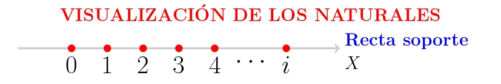
Dado \(a, b \in \mathbb{N}\), no siempre existe un número natural \(x\) tal que: \[\color{red}{a + x = b}\]. \(\color{blue}{\textbf{El Problema?}}\)
\[5 + x = 2 \quad \Longrightarrow \quad x = -3 \notin \mathbb{N}\] Pues requerimos de “números negativos”, esta necesidad obligó requiere de un nuevo conjunto de números al cual llamaremos enteros \[\color{red}{\mathbb{Z}}=\{\cdots,-3,-2,-1,0,1,2,3,\cdots\}\]
Números Reales: El conjunto \(\mathbb{N}\) de los números naturales
¿Qué significa “\(a, b \in \mathbb{N}\)”?
- Queremos hablar de números naturales: positivos.
- Al escribir \(a, b \in \mathbb{N}\), estamos diciendo:
“Tomemos dos números naturales cualesquiera: uno lo llamamos \(a\), y otro \(b\)”
Esto nos permite hablar en general, sin decir exactamente qué números son.
Es como decir:
“Imagina dos números enteros… no importa cuáles, pero piensa que existen.”
Ahora bien, no siempre se puede encontrar otro natural \(x\) que cumpla:
\[a + x = b\]
Por ejemplo, si \(a = 2\) y \(b = 5\)…
→ ¿Existe un número entero \(x\) tal que \(x = -3\)?
❌ No, porque \(x = -3\) **No es un número natural
Números Reales: El conjunto \(\color{red}{\mathbb{Z}}\) de los números enteros
\[\color{red}{\mathbb{Z}}=\{\cdots,-3,-2,-1,0,1,2,3,\cdots\}\]
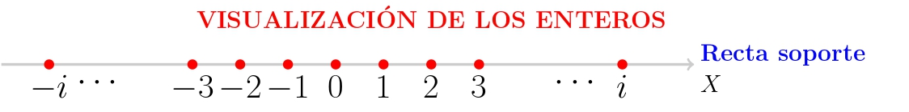
\(\color{blue}{\textbf{El problema de Números Enteros}}:\)
Dado \(a, b \in \mathbb{Z}\), no siempre existe un número entero \(x\) tal que
\[\color{red}{a \cdot x = b}\]
\[5 \cdot x = 2 \quad \Longrightarrow \quad x = \frac{2}{5} \notin \mathbb{Z}\]
El conjunto \(\color{red}{\large \mathbb{Q}}\) de los números racionales está formado por aquellos que pueden expresarse como un \(\color{blue}{\textbf{cociente entre un número entero y un número natural}}\).
Son racionales los números que tienen un número finito de cifras decimales , y también los \(\color{blue}{\textbf{números periódicos}}\)
Números Reales: El conjunto \(\color{red}{\mathbb{Z}}\) de los números enteros
Por parecidos que sea dos racionales entre ellos, hay una infinidad de racionales
Si \(a=1.41\) y \(b=1.42\)
\[a<1.41\color{red}{37823445637867951846636}<b\] Lo que significa que los racionales están muy comprimidos (pegaditos), tan juntitos que parece que contituyen un todo continuo y que llenan por completo la recta soporte, podía parecer que la visualizacion de \(\color{red}{\mathbb{Q}}\) es la propia recta soporte.
La recta real ampliada \(\mathfrak{R}\)
Llamamos recta real ampliada al conjunto que resulta al añadir a \(\mathfrak{R}\) los simbolos \(+\infty\) y \(-\infty\).
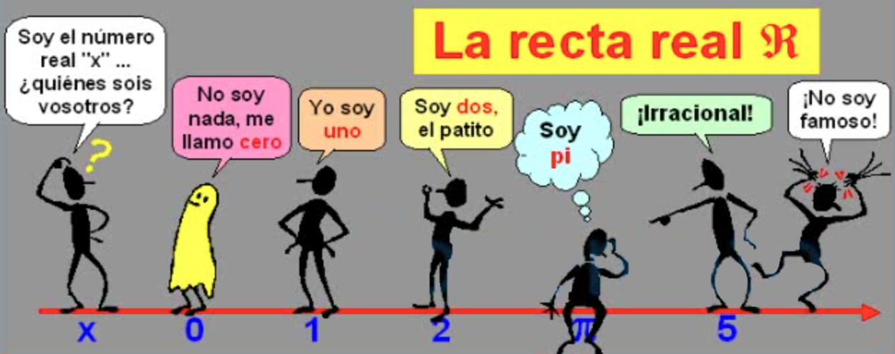
La recta real ampliada \(\mathfrak{R}\)
La recta real ampliada \(\mathfrak{R}\)
También convenimos que \(\forall x \in \mathfrak{R}\), es:
\[ \begin{array}{lll} x + (+\infty)= (+\infty)+(+\infty)=+\infty\\ x + (-\infty)= (+\infty)+(+\infty)=+\infty\\ \dfrac{x}{+\infty}=\dfrac{x}{-\infty}=0 \end{array} \]
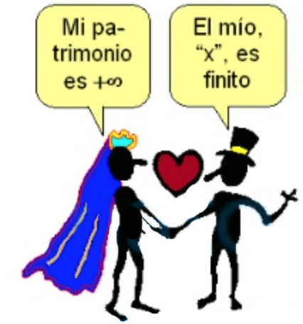
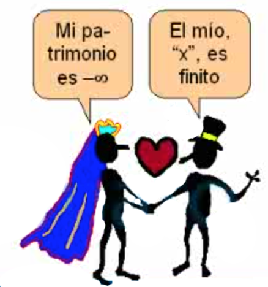
\[ x . (-\infty) \texttt{=} (-\infty).x = \begin{cases} -\infty, & \text{si x > 0 }\\ +\infty,& \text{si x < 0 } \end{cases} \] \[ x . (+\infty) \texttt{=} (+\infty).x = \begin{cases} +\infty, & \text{si x > 0 }\\ -\infty,& \text{si x < 0 } \end{cases} \]
Que quede claro!
En general, con \(\color{blue}{+\infty}\) y \(\color{blue}{-\infty}\)
No tienen sentido las operaciones que hacemos con los numeros
Intervalos de la recta real
Siendo \(a,b \in \mathfrak{R}\) tales que \(a<b\), se llaman intervalo de origen “a” y extremo “b” a los siguientes subconjuntos de \(\mathfrak{R}\):
\[ \begin{array}{llll} [a,b]=\{x \in \mathfrak{R}| a\leq x\leq b \} \equiv \textbf{intervalo cerrado} \\ (a,b)=\{x \in \mathfrak{R}| a < x < b\} \equiv \textbf{intervalo abierto} \\ [a,b)=\{x \in \mathfrak{R}| a \leq x < b \} \equiv \textbf{cerrado por la izq.} \\ \phantom{(a,b]=\{x \in \mathfrak{R}| a < x\leq b \} \equiv } \textbf{y abierto por la der.} \\ (a,b]=\{x \in \mathfrak{R}| a < x \leq b \} \equiv \textbf{abierto por la izq.} \\ \phantom{[a,b)=\{x \in \mathfrak{R}| a \leq x < b \} \equiv } \textbf{y cerrado por la der.} \\ \end{array} \]
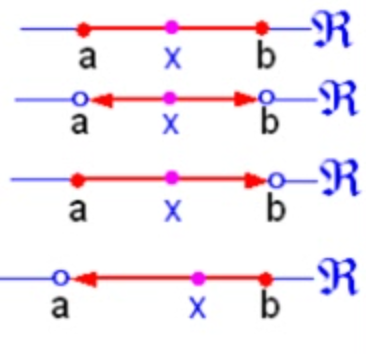
De “a” también se dice que es el extremo inferior del intervalo, y de “b” se dice que es el extremo superior. Del número real positivo “b – a” se dice que es la amplitud del intervalo.
\[ \left. \begin{array}{llll} [4,9]=\{x \in \mathfrak{R} \mid 4 \leq x \leq 9 \}\\ (2,5)=\{x \in \mathfrak{R} \mid 2 < x < 5 \}\\ [-4,2)=\{x \in \mathfrak{R} \mid -4 \leq x < 2 \}\\ (6,8]=\{x \in \mathfrak{R} \mid 6 < x \leq 8 \} \end{array} \right\} \begin{array}{ll} \text{Para expresar que tienen una amplitud finita }, \\ \text{se dice que son acotados} \end{array} \]
Se dice que un intervalo es compacto si es cerrado y acotado, como los intervalos \([-2,3],[1,8],[6,9]\)
Los siguientes intervalos tienen amplitud infinita, y para expresarlo se dice que son no acotados: \[ \begin{array}{lll} [a,+\infty) = \{ x\in \mathfrak{R} \mid x \geq a \} \quad;\quad [a,+\infty) = \{ x\in \mathfrak{R} \mid x > a \}\\ (-\infty,a) = \{ x\in \mathfrak{R} \mid x \leq a \}\quad;\quad (-\infty,a) = \{ x\in \mathfrak{R} \mid x < a\} \\ \end{array} \]
Valor absoluto de un número real
El valor absoluto de un número real “\(x\)” es el número real no negativo que se denota por \(|x|\) y se define de la siguiente manera: \[ |x| = \left\{ \begin{array}{ll} x, & \text{si } x \geq 0 \\ -x, & \text{si } x < 0 \end{array} \right. \]
Ejemplos:
Como \(5 > 0\), se tiene:
\(|5| = 5\)Como \(-7 < 0\), se tiene:
\(|-7| = -(-7) = 7\)
Propiedades del valor absoluto:
- \(|x| > 0\) si \(x \neq 0\)
- \(|0| = 0\)
- Si \(k > 0\) y \(|x| < k\), entonces \(-k < x < k\)
- \(|x \cdot y| = |x| \cdot |y|\)
- \(|x + y| \leq |x| + |y|\)
Valor absoluto
Explorador: valor absoluto en la recta real
Mueve el deslizador para ver qué rama de la definición se activa.
valor de x
−4
x < 0
regla aplicada
|x| = −x
−(−4) = 4
|x| = distancia
4
siempre ≥ 0
Aplicaciones del valor absoluto
¿Cuál es la distancia entre dos puntos?
Para evaluar la proximidad entre dos puntos “\(x\)”, “\(y\)” usaremos el número real no negativo llamado distancia entre “\(x\)” e “\(y\)”, que se denota \(d(x,y)\), siendo:
\[d(x,y)= \mid y-x\mid \,\geq 0\]
Ejemplos de distancia y valor absoluto
Ejemplo 1: La distancia entre los puntos \(-4\) y \(8\) es: \[ |8 - (-4)| = |12| = 12 \]
Ejemplo 2: También se puede calcular como: \[ |4 - (-8)| = |-12| = 12 \]
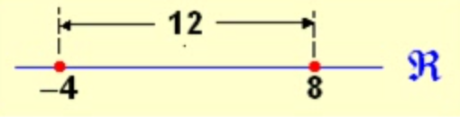
Observación:
Dos puntos “x” e “y” son muy (poco) próximos si \(d(x, y) = |y - x|\)
es un número muy próximo a cero.
Entorno de un punto en la recta real (continua…)
¿Qué es un entorno?
Si \(c \in \mathfrak{R}\) y \(r>0\), el entorno de centro en “c” y radio “r” se denota \(B_r(c)\), y lo forman los puntos “x” cuya distancia a “c” es inferior a “r”.
\[ B_r(c)=\{ x \in \mathfrak{R} \mid |x-c|<r \}=(c-r,c+r) \]
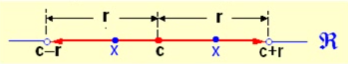
El entorno de centro en “5” y radio \(0.02\) lo forman los “x” tales que \(|x-5|<0.02\), o sea, son los puntos de intervalo \((5-0.02, 5+0.02) \equiv (4.98,5.02)\).
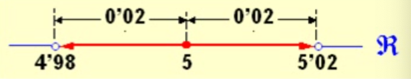
Del intervalo \((4.98,5]\) se dice que es el semientorno izquierdo de “\(5\)” y radio \(0.02\).
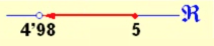
Del intervalo \([5,5.02)\) se dice que es el semientorno derecho de “\(5\)” y radio \(0.02\).
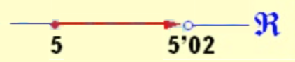
Entorno de un punto en la recta real
\[ B_r(c)=\{ x \in \mathfrak{R} \mid x-c\mid <r \}=(c-r,c+r) \]
Si de \(B_r(c)\) eliminamos el propio “\(c\)”, obtenemos el entorno reducido de centro en “\(c\)” y radio “\(r\)”, que denotamos \(B^*_r(c)\):
\[ B^*_r(c)=\{ x \in \mathfrak{R} \quad 0 < \mid x-c\mid < r \}=(c-r,c) \cup (c,c+r) \]
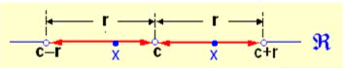
El entorno \(\color{blue}{reducido}\) de centro en “\(5\)” y radio \(0.02\) lo forman los \(\color{blue}{\text{x}}\) tales que \(0<|x|<0.02\); o sea, tales que \(x \in (4.98,5) \cup (5,5.02)\).
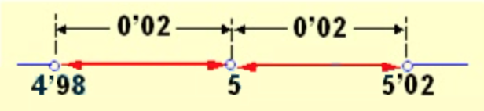
Del intervalo \((4.98,5)\) se dice que es el \(\color{blue}{\text{semientorno reducido izuierdo}}\) de “\(5\)” y radio \(0.02\); el intervalo \((5,5.02)\) es el semientorno reducido derecho de “\(5\)” y radio \(0.02\)
Entorno de un punto en la recta real (continua…)
De todo intervlo \((a,+\infty)\) se dice que es un entorno de \(+\infty\).
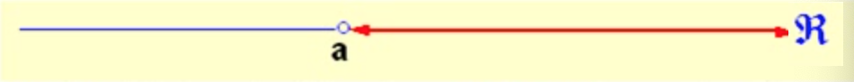
Por ejemplo, el intervalo \((6,+\infty)\) es entorno de \(+\infty\), lo mismo que el intervalo \((-15,+\infty)\)
De todo intervalo \((-\infty, b)\) se dice que es un entorno de \(-\infty\).
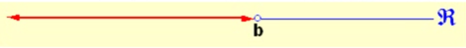
Por ejemplo, el intervalo \((- \infty,7)\) es entorno de \(-\infty\), lo mismo que el intervalo \((-\infty,-17)\).
Que quede Claro!
En estos dos casos la palabra reducido no quita ni pone nada a la palabra entorno pues como \(+\infty\) no es un número, hablar de un entorno de \(+\infty\) es igual que hablar de un entorno reducido de \(+\infty\), y lo mismo con \(-\infty\).
Propiedades de los números reales: \(\mathfrak{R}\)
Supondremos la existencia de un conjunto \(\mathbb{R}\) de números en el que hay definidas dos operaciones, suma y producto, con las siguientes propiedades:
Propiedades de la suma:
Conmutativa: \(a+b= b+a\), para todos los \(a,b \in \mathbb{R}\)
Asociativa: \(a+(b+c) = (a+b)+c\) para todos los \(a,b,c \in \mathbb{R}\)
Existe un elemento neutro, \(0 \in \mathbb{R}\), para la suma: \(a+0=a=0+a\).
Para cada \(a \in \mathbb{R}\) existe un elemento \(-a \in \mathbb{R}\), simétrico de \(a\), tal que \(a+(-a)=0=(-a)+a\)
Propiedades de los números reales: \(\mathfrak{R}\)
Propiedades del producto de números reales:
Conmutativa: \(a\cdot b=b \cdot a\), para todos los \(a,b \in \mathbb{R}\).
Asociativa: \(a \cdot (b \cdot c) = (a\cdot b)\cdot c\) para todos los \(a,b,c \in \mathbb{R}\)
Existe un elemento neutro, \(1 \in \mathbb{R}\), para el producto: \(a\cdot1=a=1\cdot a\).
Para cada \(a \in \mathbb{R}\), \(a\neq 0\), existe un elemento \(\dfrac{1}{a} = a^{-1} \in \mathbb{R}\), inverso de \(a\), tal que \(a \cdot a^{-1}=1=a ^{-1}\cdot a\)
El producto es distributivo respecto de la suma: \(a\cdot (b+c) = a\cdot b + a \cdot c\) para todos los \(a,b,c \in \mathbb{R}\).
Propiedades del valor absoluto
Sean \(a, b \in \mathfrak{R}\):
| # | Propiedad | Nombre |
|---|---|---|
| 1 | \(|a| \geq 0\) | No negatividad |
| 2 | \(|a| = 0 \iff a = 0\) | Definitud |
| 3 | \(|-a| = |a|\) | Simetría |
| 4 | \(|ab| = |a||b|\) | Multiplicatividad |
| 5 | \(\left|\dfrac{a}{b}\right| = \dfrac{|a|}{|b|},\ b\neq 0\) | División |
| 6 | \(|a+b| \leq |a|+|b|\) | Desigualdad triangular |
| 7 | \(|a-b| \leq |a|+|b|\) | Corolario triangular |
| 8 | \(\big||a|-|b|\big| \leq |a-b|\) | Desigualdad inversa |
Propiedad 1 — No negatividad: \(|a| \geq 0\)
Cada demostración usa únicamente la definición:\(|a| = \begin{cases} a & \text{si } a \geq 0 \\ -a & \text{si } a < 0 \end{cases}\)
Demostración.
Sea \(a \in \mathfrak{R}\) un número real arbitrario, tenemos dos casos debido a que \(a\) puedo ser positivo (o cero) ó negativo.
Caso 1: Si \(a \geq 0\), entonces \(|a| = a \geq 0\). ✓
Caso 2: Si \(a < 0\), entonces \(|a| = -a\). Como \(a < 0\), multiplicar por \(-1\) invierte la desigualdad: \(-a > 0 \geq 0\). ✓
En ambos casos \(|a| \geq 0\). \(\blacksquare\)
Propiedad 2 — Definitud: \(|a| = 0 \iff a = 0\)
Cada demostración usa únicamente la definición:\(|a| = \begin{cases} a & \text{si } a \geq 0 \\ -a & \text{si } a < 0 \end{cases}\)
Demostración. Como se trata de una doble implicación, procederemos en ambas direcciones:
\((\Rightarrow)\) Supongamos que \(|a| = 0\). Analicemos los posibles casos para a según la definición:
Caso 1: Si \(a > 0\), entonces \(|a| = a\). Pero como suponemos \(|a| = 0\), tendríamos que \(0 > 0\), lo cual es una contradicción.
Caso 2: Si \(a < 0\), entonces \(|a| = -a\). Dado que \(a\) es negativo, \(-a\) es positivo, por lo que \(|a| > 0\). Esto contradice nuevamente que \(|a| = 0\).
Por lo tanto, la única posibilidad lógica es que \(a = 0\).
\((\Leftarrow)\) Recíprocamente, si \(a = 0\), aplicando directamente la definición de valor absoluto (específicamente el caso \(a \geq 0\)), obtenemos que \(|0| = 0\). \(\blacksquare\)
Propiedad 3 — Simetría: \(|-a| = |a|\)
Cada demostración usa únicamente la definición:\(|a| = \begin{cases} a & \text{si } a \geq 0 \\ -a & \text{si } a < 0 \end{cases}\)
Demostración. Para demostrar que \(|-a| = |a|\), analizaremos el comportamiento de \(a\) según los tres casos posibles de su definición:
Caso 1: Si \(a > 0\) En este caso, por definición tenemos que \(|a| = a\). Como \(a\) es positivo, entonces \(-a\) es negativo (\(-a < 0\)). Aplicando la definición para valores negativos: \[|-a| = -(-a) = a\] Por lo tanto, \(|-a| = |a|\).
Caso 2: Si \(a < 0\) Aquí, por definición se tiene que \(|a| = -a\). Si \(a\) es negativo, su opuesto \(-a\) es positivo (\(-a > 0\)). Aplicando la definición para valores positivos: \[|-a| = -a\] Como en ambos lados obtenemos \(-a\), se cumple que \(|-a| = |a|\).
Caso 3: Si \(a = 0\) Si \(a\) es cero, entonces \(-a = -0 = 0\). Sustituyendo directamente: \[|-0| = |0| = 0\] Lo que confirma que \(|-a| = |a|\).
Propiedad 3 — Simetría: \(|-a| = |a|\)
contuniación
Dado que la igualdad se cumple para todos los casos posibles de \(a\) en los números reales, queda demostrado que \(|-a| = |a|\). \(\blacksquare\)
Propiedad 4 — Multiplicatividad: \(|ab| = |a||b|\)
Cada demostración usa únicamente la definición: \(|a| = \begin{cases} a & \text{si } a \geq 0 \\ -a & \text{si } a < 0 \end{cases}\)
Demostración. Para demostrar que \(|ab| = |a||b|\), analizaremos las cuatro combinaciones posibles de signos para \(a\) y \(b\). En cada caso, compararemos el resultado de \(|ab|\) con el producto de los valores absolutos individuales:
Caso 1: \(a \geq 0\) y \(b \geq 0\) Como ambos son no negativos, su producto \(ab \geq 0\). Por definición: \[|ab| = ab \quad \text{y} \quad |a||b| = (a)(b) = ab\] Ambas expresiones coinciden.
Caso 2: \(a \geq 0\) y \(b < 0\) En este caso, el producto es no positivo (\(ab \leq 0\)). Aplicando la definición: \[|ab| = -(ab) = a(-b)\] Dado que \(|a| = a\) y \(|b| = -b\), sustituimos y obtenemos: \[|ab| = |a||b|\]
Propiedad 4 — Multiplicatividad: \(|ab| = |a||b|\)
continuación
Caso 3: \(a < 0\) y \(b \geq 0\) Similar al anterior, el producto \(ab \leq 0\). Entonces: \[|ab| = -(ab) = (-a)b\] Como \(|a| = -a\) y \(|b| = b\), la igualdad se mantiene: \[|ab| = |a||b|\]
Caso 4: \(a < 0\) y \(b < 0\) Aquí, el producto de dos negativos es positivo (\(ab > 0\)). Por lo tanto: \[|ab| = ab\] Por otro lado, \(|a| = -a\) y \(|b| = -b\). Al multiplicarlos: \[|a||b| = (-a)(-b) = ab\] Nuevamente, \(|ab| = |a||b|\).
Conclusión: Habiendo agotado todos los casos posibles, se concluye que \(|ab| = |a||b|\) para cualesquiera \(a, b \in \mathbb{R}\). \(\blacksquare\)
Propiedad 5 — División: \(\left|\dfrac{a}{b}\right| = \dfrac{|a|}{|b|}\), con \(b \neq 0\)
Cada demostración usa únicamente la definición: \(|a| = \begin{cases} a & \text{si } a \geq 0 \\ -a & \text{si } a < 0 \end{cases}\)
Demostración. En lugar de analizar casos individuales, utilizaremos la Propiedad 4 (Multiplicatividad) sobre una identidad conocida.
Partimos de la relación fundamental entre división y multiplicación: \[\left( \frac{a}{b} \right) \cdot b = a\]
- Aplicamos valor absoluto a ambos lados de la igualdad: \[\left| \frac{a}{b} \cdot b \right| = |a|\]
Propiedad 5 — División: \(\left|\dfrac{a}{b}\right| = \dfrac{|a|}{|b|}\), con \(b \neq 0\)
continuación
Aplicamos la propiedad de multiplicatividad (\(|x \cdot y| = |x| \cdot |y|\)) en el lado izquierdo: \[\left| \frac{a}{b} \right| \cdot |b| = |a|\]
Despejamos el término deseado: Dado que por hipótesis \(b \neq 0\), la Propiedad 2 (Definitud) nos asegura que \(|b| \neq 0\). Por lo tanto, podemos dividir ambos lados de la ecuación entre \(|b|\) sin incurrir en una indeterminación: \[\left| \frac{a}{b} \right| = \frac{|a|}{|b|}\]
Conclusión: La propiedad queda demostrada para todo \(b \neq 0\). \(\blacksquare\)
Propiedad 6 — Desigualdad triangular: \(|a+b| \leq |a|+|b|\)
Cada demostración usa únicamente la definición:\(|a| = \begin{cases} a & \text{si } a \geq 0 \\ -a & \text{si } a < 0 \end{cases}\)
¡importante!. La demostración estándar usa un lema previo.
Lema: Para todo \(x \in \mathbb{R}\), se cumple \(x \leq |x|\) y \(-x \leq |x|\).
Demostración del lema:
Para cualquier número real \(x\), se cumplen siempre las siguientes dos condiciones:
Si \(x \geq 0\): \(|x| = x\), entonces \(x = |x|\) y \(-x \leq 0 \leq x = |x|\). ✓
Si \(x < 0\): \(|x| = -x > 0 > x\), entonces \(x < |x|\) y \(-x = |x|\). ✓
Breve explicación: Si \(x\) es positivo, es igual a su valor absoluto; si es negativo, es menor que su valor absoluto (que es positivo). Lo mismo ocurre para su opuesto.
Propiedad 6 — Desigualdad triangular: \(|a+b| \leq |a|+|b|\)
continuación
Demostración de la propiedad.
Por el lema aplicado a \(a\) y a \(b\):
\[a \leq |a|, \quad b \leq |b| \implies a + b \leq |a| + |b| \tag{i}\]
\[-a \leq |a|, \quad -b \leq |b| \implies -(a+b) \leq |a| + |b| \tag{ii}\]
De (i) y (ii) tenemos que tanto \(a+b\) como \(-(a+b)\) son menores o iguales que \(|a|+|b|\). Pero por definición:
\[|a+b| = \begin{cases} a+b & \text{si } a+b \geq 0 \\ -(a+b) & \text{si } a+b < 0 \end{cases}\]
En cualquier caso \(|a+b| \leq |a|+|b|\). \(\blacksquare\)
Propiedad 7 — Corolario: \(|a - b| \leq |a| + |b|\)
Cada demostración usa únicamente la definición:\(|a| = \begin{cases} a & \text{si } a \geq 0 \\ -a & \text{si } a < 0 \end{cases}\)
Demostración. utilizaremos la Propiedad 6 (Desigualdad Triangular) mediante un proceso de sustitución.
Podemos reescribir la resta \(a - b\) como una suma de la siguiente manera: \[|a - b| = |a + (-b)|\]
Aplicamos la propiedad (desigualda triangular) a los términos \(a\) y \((-b)\): \[|a + (-b)| \leq |a| + |-b|\]
Ahora por la Propiedad 3 (simetría), sabemos que el valor absoluto de un número es igual al de su opuesto (\(|-b| = |b|\)). Sustituyendo este valor en la expresión anterior, obtenemos: \[|a| + |-b| = |a| + |b|\]
Por lo tanto, uniendo ambos pasos, confirmamos que: \[|a - b| \leq |a| + |b|\] \(\blacksquare\)
Propiedad 8 — Desigualdad inversa: \(\big||a|-|b|\big| \leq |a-b|\)
Cada demostración usa únicamente la definición:\(|a| = \begin{cases} a & \text{si } a \geq 0 \\ -a & \text{si } a < 0 \end{cases}\)
Demostración. Utilizaremos la Desigualdad Triangular de forma estratégica mediante una descomposición aditiva. Procederemos en dos partes:
Parte 1: Análisis para \(a\) Podemos expresar \(a\) como la suma \((a - b) + b\). Aplicando la desigualdad triangular (\(|x+y| \leq |x| + |y|\)): \[|a| = |(a - b) + b| \leq |a - b| + |b|\] Si restamos \(|b|\) en ambos lados, obtenemos nuestra primera relación: \[(i) \quad |a| - |b| \leq |a - b|\]
Propiedad 8 — Desigualdad inversa: \(\big||a|-|b|\big| \leq |a-b|\)
Parte 2: Análisis para \(b\) (Análogo) De igual forma, expresamos \(b\) como \((b - a) + a\): \[|b| = |(b - a) + a| \leq |b - a| + |a|\] Restando \(|a|\) en ambos lados: \[|b| - |a| \leq |b - a|\] Como sabemos que \(|b - a| = |a - b|\) (por simetría), y multiplicando por \(-1\) (lo que invierte la desigualdad), tenemos: \[(ii) \quad -(|a| - |b|) \leq |a - b|\]
Conclusión: Aplicando la definición Hemos demostrado que tanto la expresión \((|a| - |b|)\) como su opuesto \(-(|a| - |b|)\) son menores o iguales a \(|a - b|\).
Por la definición de valor absoluto, el término \(||a| - |b||\) debe ser igual a uno de esos dos valores. Como ambos cumplen la cota, concluimos que: \[||a| - |b|| \leq |a - b|\]
\(\blacksquare\)
Interpretación geométrica de las más importantes
| Propiedad | Significado en la recta real |
|---|---|
| \(|a|\) | Distancia de \(a\) al origen |
| \(|a-b|\) | Distancia entre los puntos \(a\) y \(b\) |
| \(\|a+b\| \leq \|a\|+\|b\|\) | El camino directo nunca es más largo que el camino en dos tramos |
| \(\big\||a|-|b\|\big| \leq \|a-b\|\) | La diferencia de distancias al origen no supera la distancia entre los puntos |

© 2025 Elvis Sánchez – Universidad Técnica de Machala